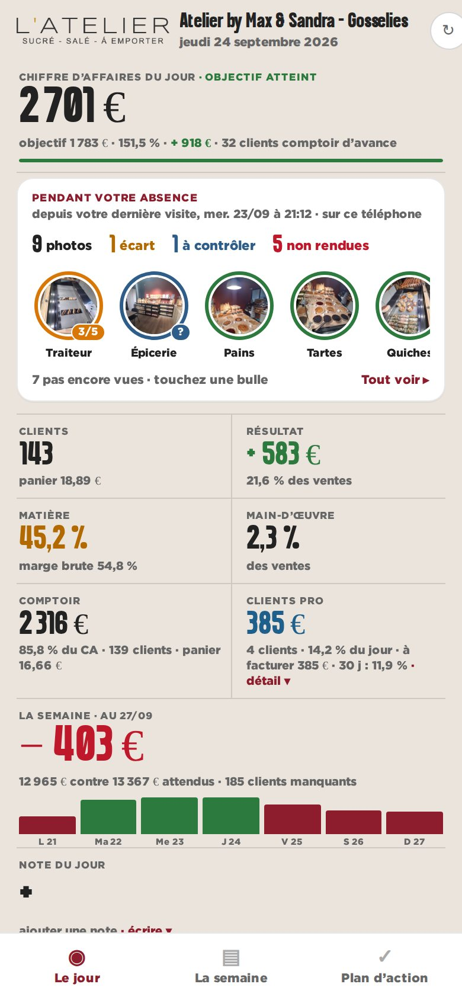
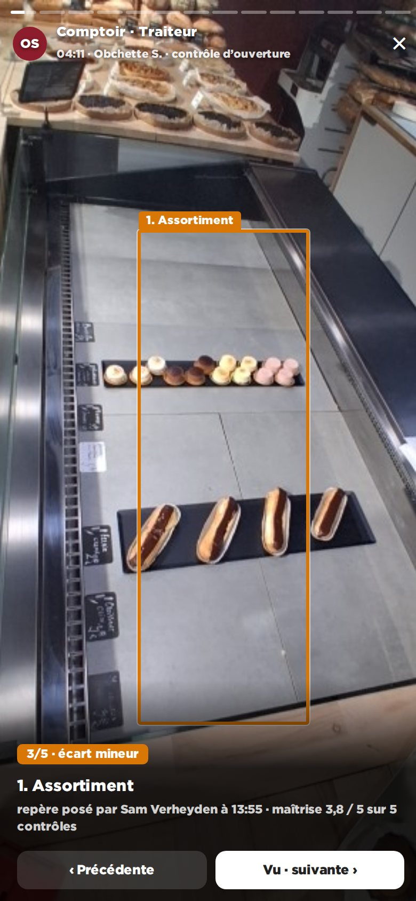
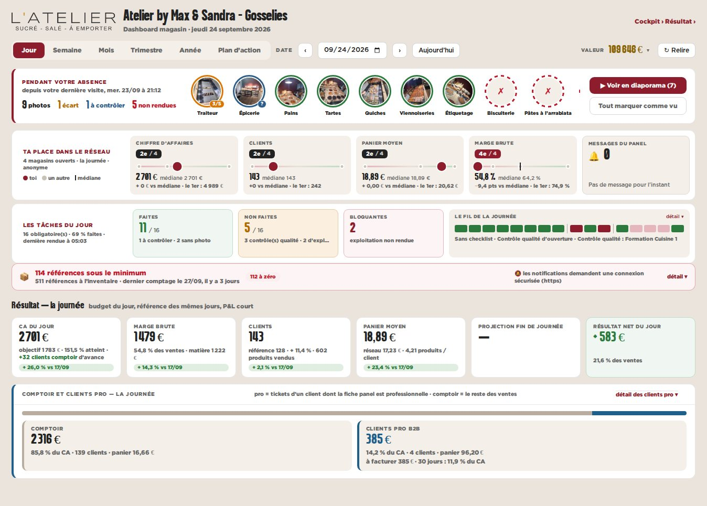

maquette · dashboard magasin · vue Jour · Gosselies, jeudi 24/09/2026 · données réelles du panel
D — « Pendant votre absence » : résumé et diaporama
En tête de page, ce qui s’est passé depuis la dernière visite du franchisé sur cet appareil : les compteurs et une bulle par contrôle (orange : écart, bleu : à contrôler, rouge hachuré : non rendu, gris : déjà vu). Une bulle ouvre un diaporama plein écran, photo par photo, note et constat en bas.
Pour
- Pensé pour le téléphone : se parcourt comme un fil social, au pouce.
- Le franchisé sait ce qu’il n’a pas encore vu.
- Le plus visible : c’est la première chose à l’ouverture.
Contre
- « Déjà vu » est retenu par appareil (pas de compte franchisé).
- Le plus de code : visionneuse plein écran et gestes.

téléphone — le résumé

téléphone — le diaporama

bureau — le même résumé en bandeau